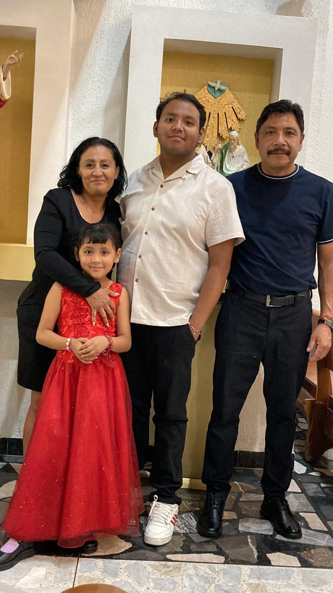

Alumno: diaz galdamez juan
Grupo: 2IM2
hola buen@s dias, tardes o noches, yo soy jose arenas y tengo 19 años de edad; naci el 24 de junio del 2007.
Desde los diez añosme ha gustado la tecnologia en especial los celulares y por su puesto los videojuegos.
me considero una persona relajada y fluida aunque avexces me dejo llevar de mas y me confio demaciado, eso si gracias a ello e conicido a muchas personas maravillosas y divertidas
termine la secundaria sin problemas pero me di cuenta que mi antigua escuelano me preparo lo suficiente para la superior ya que mis compañeros que se fueron a EPO se les resulta facil pero a mi me resulta un poco mas dificil.